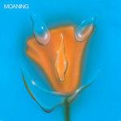
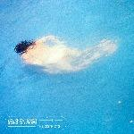
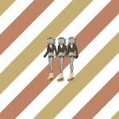

Music Reviews
-
Waxahatchee Saint Cloud
Waxahatchee leans further into her country roots on Saint Cloud, attempting to make a personal album that evokes the locations and sounds of her youth.
Ethan Gordon reviews.... -

Pearl Jam Gigaton
On their 11th studio album, the veteran Seattle rock band set out to voice dissent with poise, albeit, with a mixed bag of new and old tricks.
Juan Edgardo Rodríguez reviews... -

Moaning Uneasy Laughter
The L.A. trio's second LP expands on their raw, post-punk sound by introducing swaths of synthesizers—and deeply vulnerable songs of self-examination.
Juan Edgardo Rodríguez reviews... -

James Taylor American Standard
It’s almost impressive to see James Taylor screw up songs that are fundamentally easy to cover.
Ethan Gordon reviews... -

Porridge Radio Every Bad
On their fifth LP, the self-proclaimed DIY Brighton band graduate into festival contenders who are ready for headline status.
Juan Edgardo Rodríguez reviews... -

Grimes Miss Anthropocene
Grimes' fifth studio LP is perhaps her most ambitious release, the mischievously titled Miss Anthropecene.
Gabbie Nirenburg reviews... -

The Districts You Know I'm Not Going Anywhere
The Pennsylvania band come close to losing their identity altogether on what could have been a major breakthrough.
Mark Moody reviews... -

Tennis Swimmer
For a dose of nostalgia and relaxed vibes, you can't go wrong with Tennis; for more substance, try a different sport.
Kirk Sever reviews... -

Soccer Mommy color theory
Soccer Mommy's new album is a heavy but relatable experience, one that finds power in the somber and the morose by paining it in bright colors and wonderful riff work. [Believe the Hype]
Joe Marvilli circles the drain... -

Say Hi Diamonds & Donuts
Eric Elbogen's second album after his project Say Hi's 2017 retirement relies so heavily on synths that one would think it would be utterly unrecognizable as something that had its roots in the indie rock scene 15 years ago.